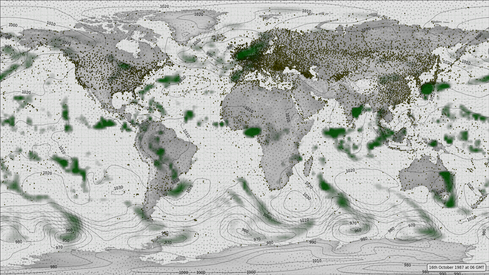

Meteorographica examples: surface weather¶

{kind=link}
Surface weather: MSLP (contours), 10m wind (vectors), observations (points), and precipitation (green shading).
# Meteorographica example script
# Set up the figure and add the continents as background
# Overlay multivariate weather: pressure, wind and precip.
import Meteorographica as mg
import iris
import matplotlib
from matplotlib.backends.backend_agg import FigureCanvasAgg as FigureCanvas
from matplotlib.figure import Figure
import cartopy
import cartopy.crs as ccrs
import pkg_resources
import gzip
import pickle
# Define the figure (page size, background color, resolution, ...
aspect=16/9.0
fig=Figure(figsize=(22,22/aspect), # Width, Height (inches)
dpi=100,
facecolor=(0.88,0.88,0.88,1),
edgecolor=None,
linewidth=0.0,
frameon=False, # Don't draw a frame
subplotpars=None,
tight_layout=None)
# Attach a canvas
canvas=FigureCanvas(fig)
# All mg plots use Rotated Pole, in this case just use the standard
# pole location.
projection=ccrs.RotatedPole(pole_longitude=180.0, pole_latitude=90.0)
# Define an axes to contain the plot. In this case our axes covers
# the whole figure
ax = fig.add_axes([0,0,1,1],projection=projection)
ax.set_axis_off() # Don't want surrounding x and y axis
# Set the axes background colour
ax.background_patch.set_facecolor((0.88,0.88,0.88,1))
# Lat and lon range (in rotated-pole coordinates) for plot
extent=[-180.0,180.0,-90.0,90.0]
ax.set_extent(extent, crs=projection)
# Lat:Lon aspect does not match the plot aspect, ignore this and
# fill the figure with the plot.
matplotlib.rc('image',aspect='auto')
# Draw a lat:lon grid
mg.background.add_grid(ax,
sep_major=5,
sep_minor=2.5,
color=(0,0.3,0,0.2))
# Add the land
land_img=ax.background_img(name='GreyT', resolution='low')
# Get the wind data from the Meteorographica example_data
# Mystical incantation to get filenames
udf=pkg_resources.resource_filename(
pkg_resources.Requirement.parse('Meteorographica'),
'example_data/20CR2c.1987101606.uwnd.10m.nc')
uwnd=iris.load_cube(udf)
vdf=pkg_resources.resource_filename(
pkg_resources.Requirement.parse('Meteorographica'),
'example_data/20CR2c.1987101606.vwnd.10m.nc')
vwnd=iris.load_cube(vdf)
# Reduce to a single ensemble member
uwnd=uwnd.extract(iris.Constraint(member=1))
vwnd=vwnd.extract(iris.Constraint(member=1))
# Plot the wind vectors
mg.wind.plot(ax,uwnd,vwnd)
# Also pressure
edf=pkg_resources.resource_filename(
pkg_resources.Requirement.parse('Meteorographica'),
'example_data/20CR2c.1987101606.prmsl.nc')
prmsl=iris.load_cube(edf)
prmsl=prmsl.extract(iris.Constraint(member=1))
mg.pressure.plot(ax,prmsl,scale=0.01)
# Also precip
edf=pkg_resources.resource_filename(
pkg_resources.Requirement.parse('Meteorographica'),
'example_data/20CR2c.1987101606.prate.nc')
prate=iris.load_cube(edf)
prate=prate.extract(iris.Constraint(member=1))
mg.precipitation.plot(ax,prate,resolution=0.25)
# Add the observations
edf=pkg_resources.resource_filename(
pkg_resources.Requirement.parse('Meteorographica'),
'example_data/20CR2c.1987101606.observations.pklz')
of=gzip.open(edf,'rb')
obs=pickle.load(of,encoding='latin1')
of.close()
mg.observations.plot(ax,obs,radius=0.25)
# Add a label showing the date
label="16th October 1987 at 06 GMT"
mg.utils.plot_label(ax,label,
facecolor=fig.get_facecolor())
# Render the figure as a png
fig.savefig('multivariate.png')